Note: To configure the integration of ZyLAB ONE Legal Hold into Azure AD, you need to add ZyLAB ONE Legal Hold from the gallery to your list of managed SaaS apps.
In this topic, you'll learn how to integrate ZyLAB ONE Legal Hold with Azure Active Directory (Azure AD). When you integrate ZyLAB ONE Legal Hold with Azure AD, you can:
Control in Azure AD who has access to ZyLAB ONE Legal Hold.
Manage your accounts in one central location - the Azure portal.
|
|
Note: To configure the integration of ZyLAB ONE Legal Hold into Azure AD, you need to add ZyLAB ONE Legal Hold from the gallery to your list of managed SaaS apps. |
Sign in to the Azure portal with an Azure AD subscription (Application Administrator account).
Select the View button beneath the Manage Azure Active Directory tile.
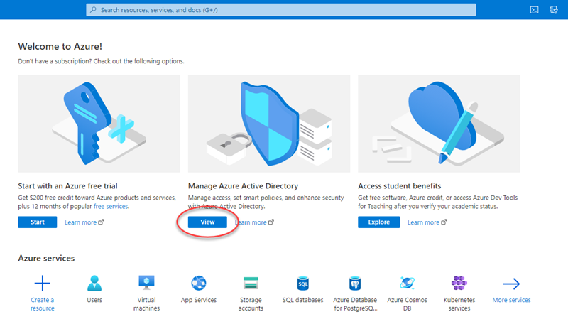
Select the Enterprise applications section.
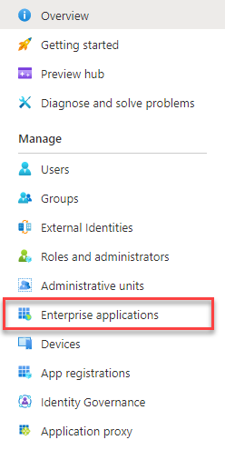
Select + New application.
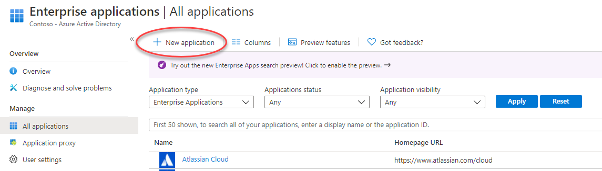
Search for 'zylab' and select the ZyLAB ONE Legal Hold tile.
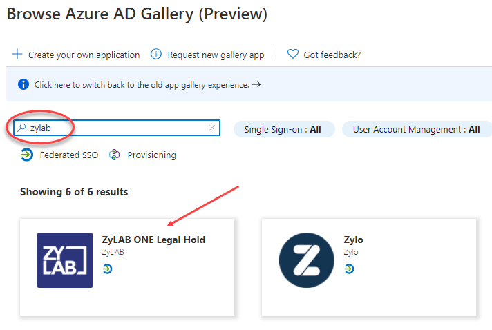
Select Sign up for ZyLAB ONE Legal Hold (bottom right corner).
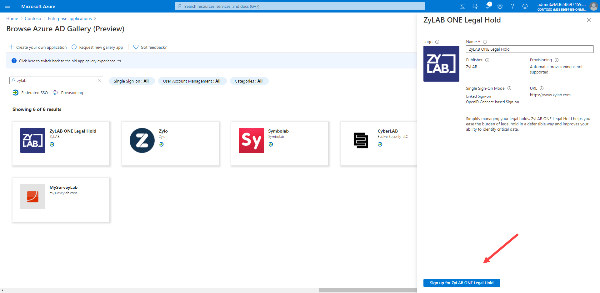
Select your Application Administrator account.
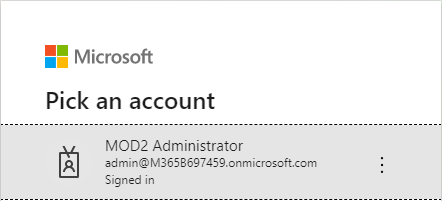
Select Consent on behalf of your organization (recommended) and click Accept.
With 'Consent on behalf of your organization' selected, custodians do not have to consent when logging in. It makes life easier for them.
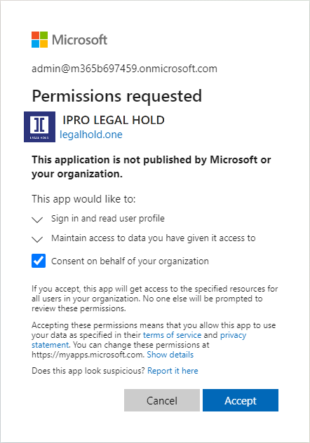
The ZyLAB ONE Legal Hold application is added and you will be signed in. However, since no roles have been set yet for ZyLAB ONE Legal Hold, you will be directed to the empty Custodian Portal.
Close this tab and continue with Step 2 below to assign roles to ZyLAB ONE Legal Hold.

Azure Active Directory uses a concept called assignments to determine which users should receive access to selected apps. Decide which users and/or groups in Azure AD need access to ZyLAB ONE Legal Hold. Once decided, you can assign these users and/or groups to ZyLAB ONE Legal Hold by following the instructions here. The following roles can be assigned to users: System Administrator, Global Hold Manager, Global Hold Viewer , Matter Manager, Matter Viewer and Custodian.
|
|
Note 1: At a minimum, assign one user (with an Azure Application Administrator account) as System Administrator (to synchronize contacts) and one user as Global Hold Manager (to test sending preview emails). Note 2: Custodians do not require a role in the Azure portal when the "User assignment required" is set to No. This is preferred. Users without a role assigned will only have access to the Custodian portal of ZyLAB ONE Legal Hold when added to a hold. If you need to restrict access to the custodian portal for specific users, then you can use the custodian role assignment. |
Refresh the Enterprise applications section.
Search for and select the ZyLAB ONE Legal Hold application.

Select the 1. Assign users and groups tile.
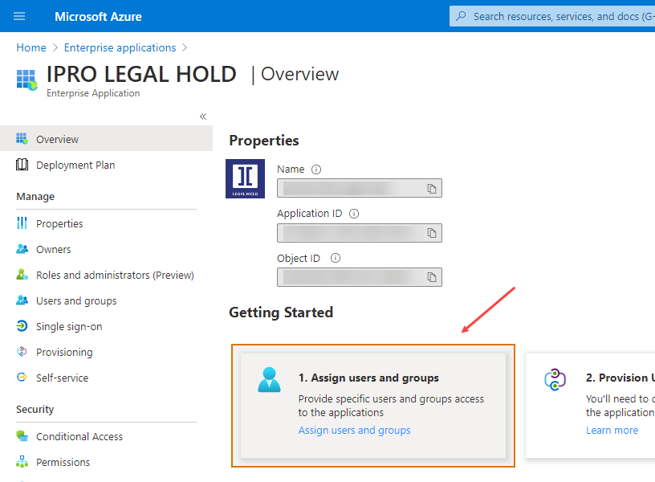
Select + Add user.
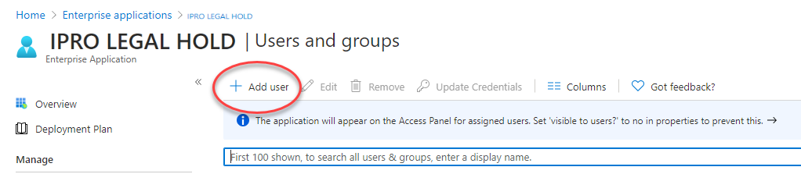
Select Users and groups.
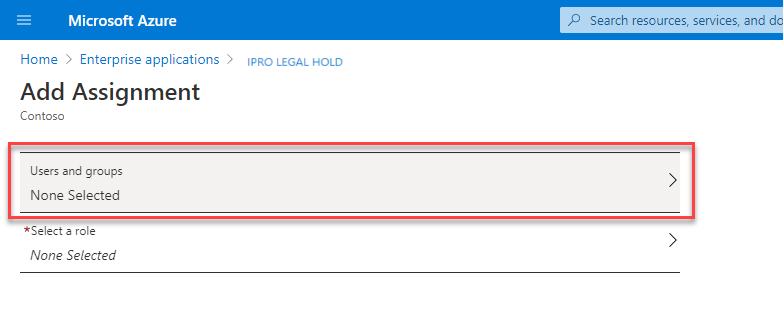
In the right pane, select a user with an Azure Application Administrator account, and click Select at the bottom.

Select Select a role.
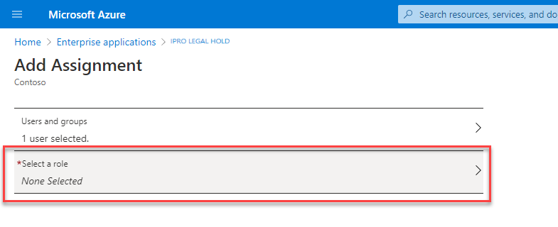
In the right pane, select the System Administrator role, and click Select at the bottom.

In the bottom left corner, select Assign.
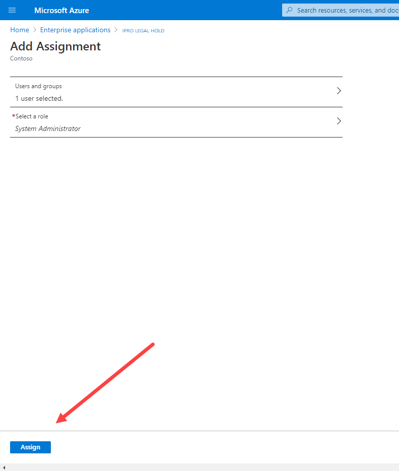
Repeat step 4 to 9, but now assign a user with the Global Hold Manager Role.
|
|
Note: This user does not need to have an Azure Application Administrator account. |
In this section you'll learn how to add contacts from the Azure Active Directory to ZyLAB ONE Legal Hold.
Prerequisite: You need a user (with an Azure Application Adminstrator role) with the ZyLAB ONE Legal Hold System Administrator role.
Go to https://legalhold.one (depending on previous settings, you might have another domain, like .eu)
Log in with the user (with an Azure Application Administrator role) that has the ZyLAB ONE Legal Hold System Administrator role.
As a System Administrator you can synchronize contacts from the Azure Directory.
On the Address Book page, select the Settings icon 
Select Synchronize Contacts.
By synchronizing contacts, you will always work with an up-to-date list of potential custodians.
All users from the Azure Active Directory will be added. You only need to do this once. The list with users will be automatically synchronized every day.

Select the user with the ZyLAB ONE Legal Hold System Administrator role.
Select Accept.
|
|
Note: To synchronize contacts, it is not required to select 'Consent on behalf of your organization' as only Legal Hold System Administrators will ever see this option. Once contacts are synchronized, the Legal Hold system administrator never has to follow these steps again as the list with users will be automatically synchronized every day. Other users of Legal Hold are not allowed to synchronize contacts. |
Once the contacts have been synchronized, close the tab.
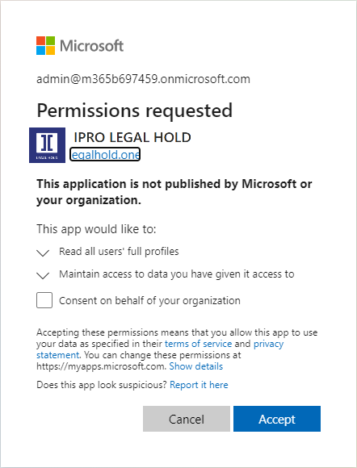
|
|
Note: when a user is missing after synchronization, the User Type might be empty or wrongly stated. It must be 'Member'. For more information, please refer to User Type is Blank. |
In this section you'll learn how to enable ZyLAB ONE Legal Hold to send email messages on your behalf.
Prerequisite: You need a user with the ZyLAB ONE Legal Hold Global Hold Manager role. This user needs to have an Office 365 license with Exchange Online element enabled. Please check this at Home > Users > "User with ZyLAB ONE Legal Hold Global Hold Manager role" > Licenses.
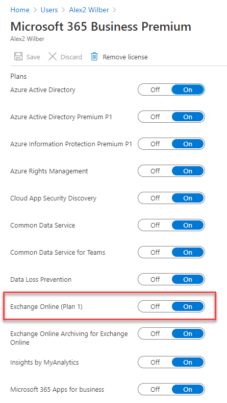
Go to https://legalhold.one (Depending on previous settings, you might have another domain, like .eu).
Log in with the user that has the ZyLAB ONE Legal Hold Global Hold Manager role.
In the top right user menu, you can navigate to Profile Settings.

Click in the Email Preferences section on Enable, to enable email sending.
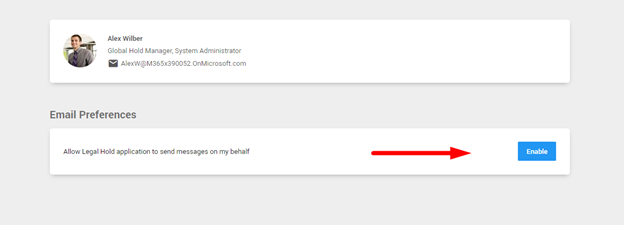
Click Accept in the Permissions Requested pop-up to allow ZyLAB ONE Legal Hold to send emails on your behalf.
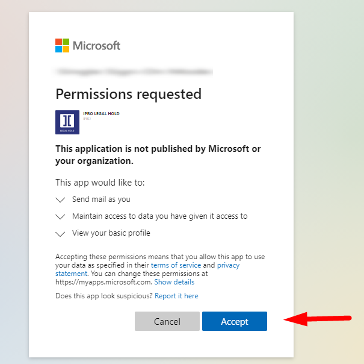
Now you can send a test message to check if ZyLAB ONE Legal Hold is able to sent email messages. Click on Send Test Message.

Click Yes to send the message. Check your Inbox to see if the message has been sent.
Alternatively, as a Global Hold Manager, test sending emails using the email message preview option.
In the menu on the left, select Configuration > Message Templates.
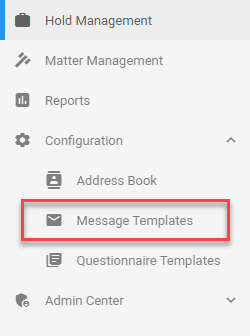
Select  .
.
Define a Name (for example, Test Message), Type, Subject and a write a bit of content. Click Save (bottom right corner).
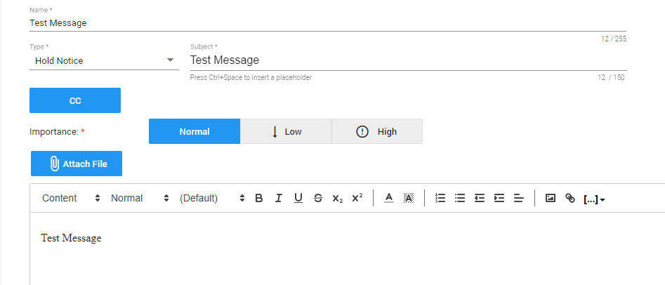
On the Message Templates page, select Preview Message Template.

Select .
Select the user with the ZyLAB ONE Legal Hold Global Hold Manager role.
Select Accept.
The preview message has been sent.
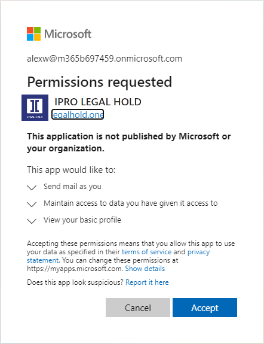
|
|
You have learned how to integrate ZyLAB ONE Legal Hold with Azure Active Directory. You have synchronized your contacts and sent a preview message. All users with a Global Hold Manager role can now use ZyLAB ONE Legal Hold and start creating legal holds. Please continue with our Quick Start Videos. |